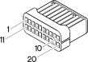

D004A Front/engine junction ( ENGINE )
- Path
- Electrical equipment > 3 Connectors > D Intermediate couplings > D4 Front/engine junction > D004A Front/engine junction ( ENGINE )
- Kind
- connector pinout (pin -> wire colour -> other end)
- Applies to
- engines: 1.9 JTD 8V; all production periods
- Interactive page
- https://sloeber94.github.io/elrnDB-fMltpl/en/#/2890016
Applies to: engines: 1.9 JTD 8V; all production periods

Wiring | Colour |
|---|---|
NERO (black) |
Topics linked from this page (4)
- 50 ENGINE
- K30 Brake fluid level sensor (switch)
- K84 Speedometer sensor
- M010C Engine management ECU ( ENGINE )
Topics that link to this page (31)
- A010B Alternator ( ENGINE )
- B001C Junction unit ( FRONT )
- B001D Junction unit ( FRONT )
- B001D Junction unit (FRONT)
- B001D Junction unit (FRONT)
- B001D Junction unit (FRONT)
- B001D Junction unit (FRONT)
- B001D Junction unit (FRONT)
- B001D Junction unit (FRONT)
- B025 Ignition-operated services supply fuse 1554 ( FRONT )
- B036 Lambda sensor fuse ( FRONT )
- D001B Front/facia junction ( FRONT )
- I030 Brake pedal switch ( FRONT )
- I030 Brake pedal switch ( FRONT )
- I031 Clutch pedal switch ( FRONT )
- J010 Fuel injection main relay ( FRONT )
- J010 Fuel injection main relay ( FRONT )
- J010 Fuel injection main relay ( FRONT )
- J015 Fuel pump relay ( FRONT )
- J030 Engine fan 1st speed relay (FRONT)
- J030 Engine fan 1st speed relay (FRONT)
- J031 Engine fan 2nd speed relay (FRONT)
- J031 Engine fan 2nd speed relay (FRONT)
- K030 Brake fluid level sensor (switch) (switch)
- K036 Engine coolant temperature sensor/sender unit ( ENGINE )
- K036 Engine coolant temperature sensor/sender unit (ENGINE)
- K036 Engine coolant temperature sensor/sender unit (ENGINE)
- K079 Additional heater outside air temperature sensor ( FRONT )
- K079 Additional heater outside air temperature sensor ( FRONT )
- M010B Engine management ECU ( ENGINE )
- M010B Engine management ECU ( ENGINE )